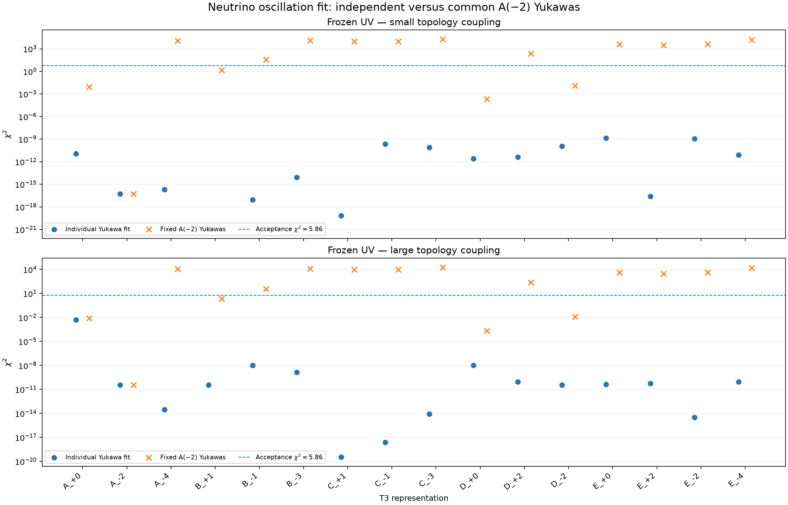

Individually fitted Yukawas at each frozen-UV boundary. The A(-2) donor is fitted separately in the low and high topology-coupling scenarios.
| Model | chi2 | Within threshold? | C5 source |
|---|---|---|---|
| <a href="model_A_p0.html">A_+0</a> | 1.12149e-11 | Yes | hierarchical-hard-plus-direct |
| <a href="model_A_m2.html">A_-2</a> | 5.30105e-17 | Yes | hierarchical-hard-plus-direct |
| <a href="model_A_m4.html">A_-4</a> | 2.08195e-16 | Yes | legacy-common-scale |
| <a href="model_B_p1.html">B_+1</a> | 1.1989e-21 | Yes | hierarchical-hard-plus-direct |
| <a href="model_B_m1.html">B_-1</a> | 8.93793e-18 | Yes | hierarchical-hard-plus-direct |
| <a href="model_B_m3.html">B_-3</a> | 8.29795e-15 | Yes | legacy-common-scale |
| <a href="model_C_p1.html">C_+1</a> | 6.60223e-20 | Yes | hierarchical-hard-plus-direct |
| <a href="model_C_m1.html">C_-1</a> | 2.28605e-10 | Yes | hierarchical-hard-plus-direct |
| <a href="model_C_m3.html">C_-3</a> | 8.04078e-11 | Yes | legacy-common-scale |
| <a href="model_D_p0.html">D_+0</a> | 2.57559e-12 | Yes | hierarchical-hard-plus-direct |
| <a href="model_D_p2.html">D_+2</a> | 4.12536e-12 | Yes | hierarchical-hard-plus-direct |
| <a href="model_D_m2.html">D_-2</a> | 1.2035e-10 | Yes | hierarchical-hard-plus-direct |
| <a href="model_E_p0.html">E_+0</a> | 1.36835e-09 | Yes | hierarchical-hard-plus-direct |
| <a href="model_E_p2.html">E_+2</a> | 2.43592e-17 | Yes | hierarchical-hard-plus-direct |
| <a href="model_E_m2.html">E_-2</a> | 1.18552e-09 | Yes | hierarchical-hard-plus-direct |
| <a href="model_E_m4.html">E_-4</a> | 8.27006e-12 | Yes | legacy-common-scale |
| Model | chi2 | Within threshold? | C5 source |
|---|---|---|---|
| <a href="model_A_p0.html">A_+0</a> | 0.00516295 | Yes | hierarchical-hard-plus-direct |
| <a href="model_A_m2.html">A_-2</a> | 3.53986e-11 | Yes | hierarchical-hard-plus-direct |
| <a href="model_A_m4.html">A_-4</a> | 2.86028e-14 | Yes | legacy-common-scale |
| <a href="model_B_p1.html">B_+1</a> | 3.44636e-11 | Yes | hierarchical-hard-plus-direct |
| <a href="model_B_m1.html">B_-1</a> | 1.06771e-08 | Yes | hierarchical-hard-plus-direct |
| <a href="model_B_m3.html">B_-3</a> | 1.48272e-09 | Yes | legacy-common-scale |
| <a href="model_C_p1.html">C_+1</a> | 3.48456e-20 | Yes | hierarchical-hard-plus-direct |
| <a href="model_C_m1.html">C_-1</a> | 2.45329e-18 | Yes | hierarchical-hard-plus-direct |
| <a href="model_C_m3.html">C_-3</a> | 8.57308e-15 | Yes | legacy-common-scale |
| <a href="model_D_p0.html">D_+0</a> | 1.04657e-08 | Yes | hierarchical-hard-plus-direct |
| <a href="model_D_p2.html">D_+2</a> | 8.5912e-11 | Yes | hierarchical-hard-plus-direct |
| <a href="model_D_m2.html">D_-2</a> | 3.4551e-11 | Yes | hierarchical-hard-plus-direct |
| <a href="model_E_p0.html">E_+0</a> | 4.12798e-11 | Yes | hierarchical-hard-plus-direct |
| <a href="model_E_p2.html">E_+2</a> | 5.58612e-11 | Yes | hierarchical-hard-plus-direct |
| <a href="model_E_m2.html">E_-2</a> | 3.02698e-15 | Yes | hierarchical-hard-plus-direct |
| <a href="model_E_m4.html">E_-4</a> | 8.65198e-11 | Yes | legacy-common-scale |
